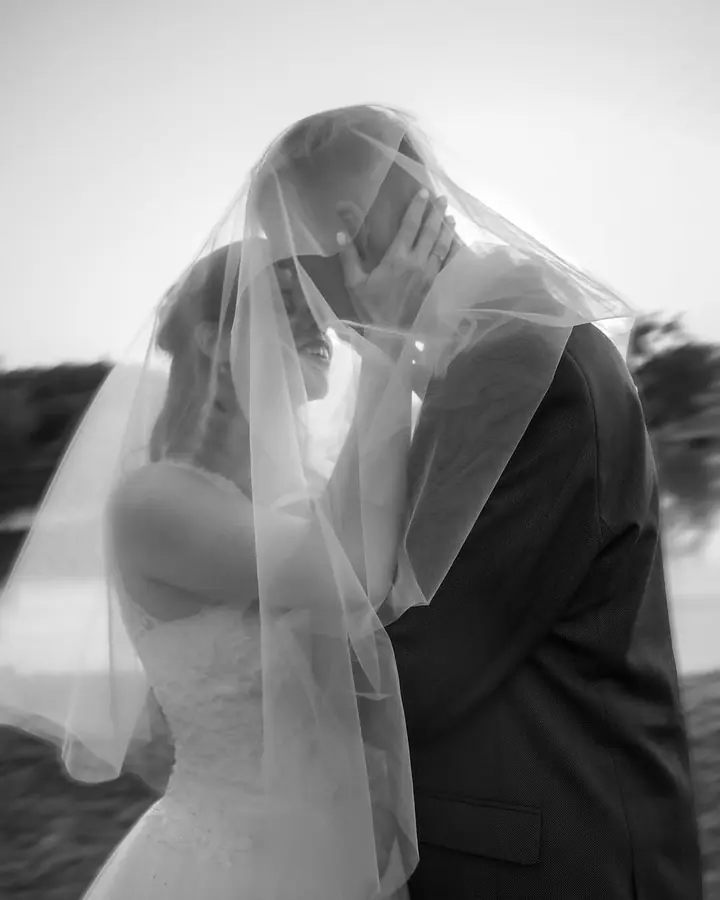
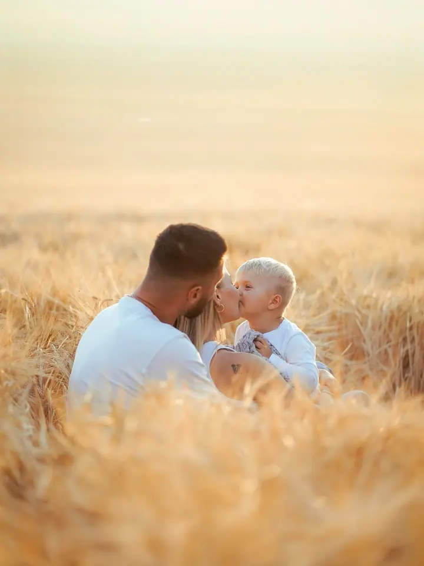
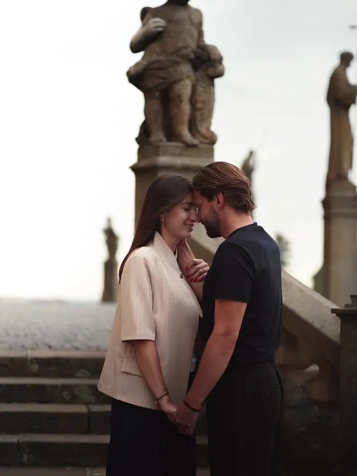
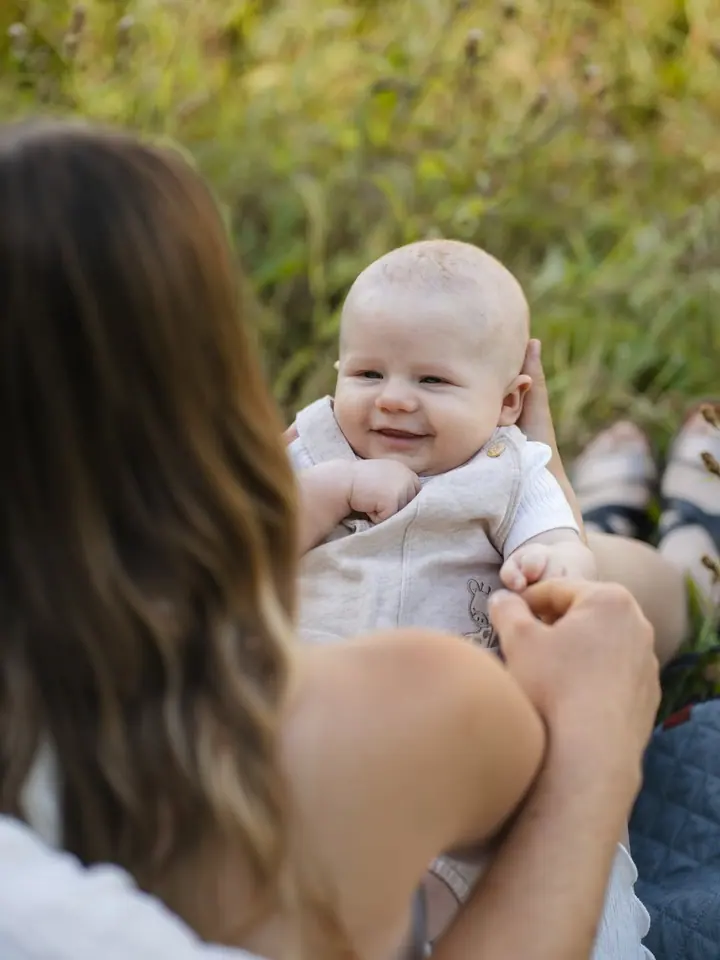

jedna
Svatební focení
Celý den od ranních příprav po večerní oslavu, nebo jen obřad a společné focení. Velká veselka, malý obřad v kruhu rodiny i útěk ve dvou do přírody.

Svatební, rodinná a párová fotografka · Olomouc, Ostrava, a tam, kde je potřeba

Jmenuji se Andula a fotím svatby, rodiny a páry. Fotím převážně v Olomouckém a Moravskoslezském kraji, na svatbu za vámi ale ráda přijedu kamkoliv po celé republice.
Více o mně
Co fotím
jedna
Celý den od ranních příprav po večerní oslavu, nebo jen obřad a společné focení. Velká veselka, malý obřad v kruhu rodiny i útěk ve dvou do přírody.
dvě
Vaše rodina tak, jak opravdu vypadá, od prvních krůčků vašich dětí. Venku v přírodě nebo v klidu ateliéru.
tři
Uvolněné focení ve dvou, při kterém se nikdo nemusí stydět. Dostanete 15 profesionálně upravených fotografií v digitální podobě.
Fotím i firemní portfolia, produkty a domácí mazlíčky. Rozsah i cenu domlouvám s každým individuálně.

Autenticky, uvolněně a přirozeně.
Za objektivem
Hezký den! Focením se zabývám už 12 let. Začínala jsem s focením mazlíčků, dnes se věnuji především svatbám, rodinám a párovému focení.
Chci zachytit celý váš příběh, autenticky, uvolněně a přirozeně, tak aby se každý cítil před foťákem pohodlně. Žádné strnulé pózování, spíš společně strávený čas, při kterém vznikají opravdové fotky.
Ať plánujete svatbu, rodinné focení, párové snímky nebo jakoukoliv jinou událost, vždycky focení přizpůsobím přesně vám. Fotit můžeme venku i v ateliéru, kde je komfortní prostředí, kontrolované světlo a prostor pro kreativní scény.
Anna
Napište mi přes formulář, e-mailem nebo do zpráv na Instagramu a zamluvte si termín.
Probereme, co si představujete, kde budeme fotit a jestli venku, nebo v ateliéru.
Fotíme v klidu a uvolněně, abyste se cítili pohodlně a byli sami sebou.
Vybrané fotky pečlivě upravím a předám vám je v digitální podobě.
Portfolio
Otázky
Párové focení stojí 1 500 Kč a dostanete 15 profesionálně upravených fotografií v digitální podobě.
Každá svatba je jiná, proto je cena dle domluvy. Záleží hlavně na tom, jestli chcete zachytit celý den, nebo jen obřad a společné focení.
Focení nabízím převážně v Olomouckém a Moravskoslezském kraji. Na svatbu za vámi ale přijedu kamkoliv po celé ČR.
Ano, páry, rodiny, portréty i mazlíčky můžu fotit venku i v ateliéru. Příplatek za ateliér je 500 Kč.
Ano, fotím také firemní portfolia, produkty a domácí mazlíčky. Cenu i rozsah domlouvám individuálně podle vašich představ.
Napište pár vět o tom, co si představujete. anna.tlachova@seznam.cz